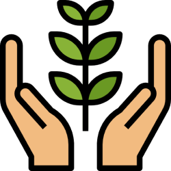

<ion-app>
  <ion-split-pane contentId="main-content">
    <ion-menu menuId="main-menu" contentId="main-content" type="overlay">
      <ion-content>
        <div class="menu-header-bg"></div>
        <div class="header-content">
          <a [routerLink]="['/home']" routerLinkActive="router-link-active"> </a>

          <ion-label *ngIf="auth.user$ | async as user">
            <h2>{{user.name}}</h2>
          </ion-label>
        </div>
        <div class="action-button">
          <!-- <ion-button>
            <ion-icon slot="start" name="add"></ion-icon> 
            Add Tasks
          </ion-button> -->
        </div>
        
        <ion-list class="menu-items" lines="none">
            <ion-menu-toggle auto-hide="false" *ngFor="let p of appPages; let i = index">
              <ion-item routerDirection="root" [routerLink]="[p.url]" lines="none" detail="false" routerLinkActive="active-item" 
                [routerLinkActiveOptions]="{exact: true}">
                <ion-icon slot="start" [ios]="p.icon + '-outline'" [md]="p.icon + '-sharp'"></ion-icon>
                <ion-label>{{ p.title }}</ion-label>
              </ion-item>
            </ion-menu-toggle>
        </ion-list>
      </ion-content>
    </ion-menu>
    <!-- <app-header></app-header> -->
    <ion-router-outlet id="main-content"></ion-router-outlet>
  </ion-split-pane>
</ion-app>
